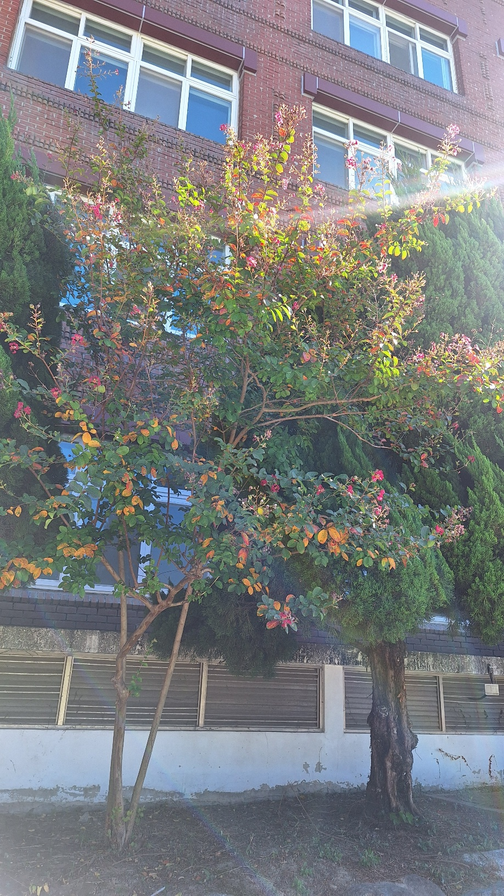

배롱나무 소개
안녕하세요! 여름에 분홍색 꽃을 풍성하게 피우는 배롱나무를 만나 보겠습니다.
배롱나무는 매끈한 줄기와 오랫동안 꽃이 이어지는 듯한 모습으로 잘 알려져 있습니다. 꽃이 피는 시기와 계절에 따른 변화를 살펴보며 나무의 생태를 알아봅시다.

배롱나무란?
부처꽃과에 속하는 낙엽 활엽 소교목입니다. 나무껍질이 얇게 벗겨져 매끈한 무늬가 드러나고, 여름철 가지 끝에 분홍색 꽃이 모여 핍니다.

배롱나무 기본 정보와 계절 변화
배롱나무 기본 정보
배롱나무를 찾아볼 수 있는 곳
햇빛이 잘 드는 학교 화단과 공원, 정원 등의 조경 공간에서 관찰할 수 있습니다. 제공된 학교 주변 사진에서도 가지 끝에 모여 피는 꽃과 둥근 잎을 확인할 수 있습니다.
계절마다의 모습
배롱나무는 낙엽수라 계절에 따라 모습이 달라집니다. 봄에는 새잎이 돋고, 여름에는 꽃이 피며, 가을에는 잎의 색이 변한 뒤 떨어지고, 겨울에는 매끈한 수피와 가지의 형태가 드러납니다.
새잎이 돋고 가지가 자람
분홍색 꽃이 차례로 피어남
잎의 색이 변하고 낙엽이 짐
잎이 떨어져 수피와 가지가 드러남
신기한 사실: 약 100일 동안 이어지는 꽃
배롱나무는 꽃차례 안에서 꽃이 차례로 피고 지기 때문에 한 나무가 오랫동안 꽃을 피우는 것처럼 보입니다. 그래서 목백일홍이라는 이름으로도 불립니다.
IT·공학 연결: 기상 데이터로 개화 시기 살펴보기
식물의 개화 시기는 기온과 일조 조건의 영향을 받습니다. 지역별 일평균 기온을 누적한 적산온도와 일조량을 기상청 자료에서 모아 해마다 개화 시기를 비교하면, 기상 변화와 꽃이 피는 시기의 관계를 분석할 수 있습니다.
생명과학 연결: 추출물 연구의 한계
배롱나무 꽃과 잎 추출물의 항산화 활성 등을 연구한 사례가 있습니다. 세포 실험 결과가 긍정적이더라도 실제 치료 효과를 입증한 것은 아니므로 탈모 치료제 등으로 단정할 수 없습니다.
배롱나무 게임
직접 만든 게임으로 배롱나무와 학교 식물을 재미있게 배워 봅시다!
🎮 학교 프로젝트 게임
배롱나무와 생태계·탄소
배롱나무가 생태계에 미치는 영향
배롱나무는 여름철 꽃을 피워 꽃을 찾는 곤충에게 먹이 자원을 제공할 수 있습니다. 공원과 학교 정원에 심으면 계절에 따른 꽃과 잎의 변화를 관찰할 수 있는 녹지 공간을 만듭니다.

배롱나무의 이산화 탄소 흡수량
배롱나무도 다른 나무와 마찬가지로 광합성을 통해 이산화 탄소를 흡수하고 성장 과정에서 탄소를 저장합니다. 그러나 한 그루의 연간 흡수량을 계산하려면 나무의 크기와 생장량을 측정해야 합니다.
개체별 측정값 미입력
필요 자료: 수고 · 흉고직경 · 수관폭 · 연간 생장량
단위: kg CO₂/년

흡수량과 배출량 비교
배롱나무 한 그루의 연간 흡수량과 시설의 연간 배출량을 비교하려면 양쪽 자료를 같은 단위로 맞춰야 합니다. 시설 배출량은 실제 배출 통계나 공개 자료를 사용해야 하며, 사진만으로 배출량을 판단할 수는 없습니다.
 시설의 탄소 배출
시설의 탄소 배출시설 사진은 비교 개념을 설명하기 위한 예시입니다.
배롱나무가 우리에게 미치는 영향
여름에는 꽃으로 주변 경관을 밝히고, 가을과 겨울에는 잎이 떨어지며 수피와 가지의 모습이 드러납니다. 개화 시기를 기록하고 기상 자료와 비교하면 자연 현상을 데이터로 분석하는 탐구 활동으로도 연결할 수 있습니다.
꽃이 피는 날짜를 기록하는 것부터 관찰을 시작해 봅시다.